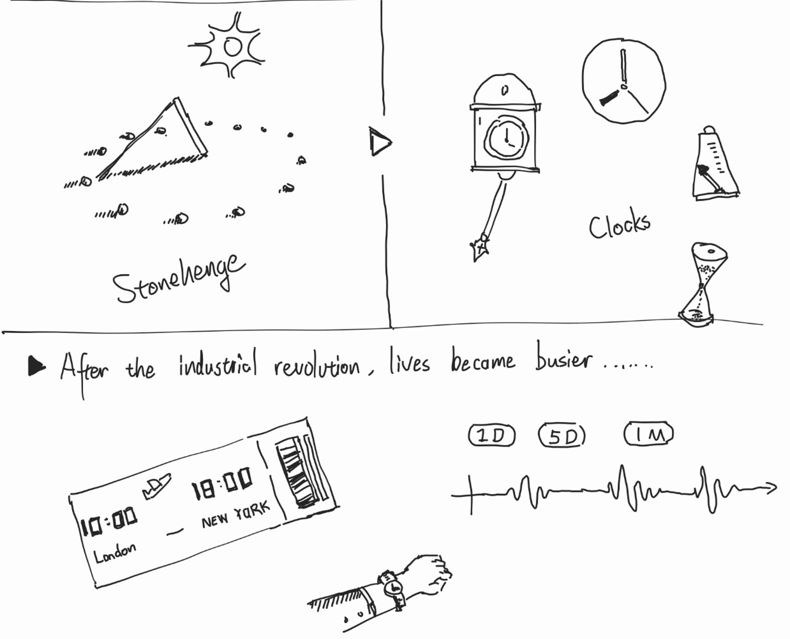

Dataset, Visualization, and Data Storytelling
This is a summary of my research on data visualization, for the course uniData Visualization Tools, Datasets and Data Stories
Working with Data
Designers raise questions. Statistic tools helps designer understand the question. And designers translate information into visual language with statistic methods.
Visual languages for statistics has been developed throughout history. Based on my research in different fields, I practiced demonstrating the methods of data visualization throughout the history of human beings. For example, people has been using many figures to record the flow of time.

Along with the change through the embodied experience of time, languages about time has been developed across different measurement with different accuracy, charts, precisions and span.
JavaScript enable designers to connect our design with online resources and work with blueprints on top of the graphics. On top of that, I practiced mapping data with various geographical projections on webpage, which is part of my project outcome of the first semester.
 When it comes to complex dataset, drawing graphs as 3-d modeling provides better performance. Also, it makes the comprehension of deeper statistical information possible. The model can then be printed or crafted into physical ones
On 3d softwires like Rhino and Blender, blueprints that translate datasets into model parameters creates charts easily. I learnt this techniques from Architectural designers and practiced it into data visualization.
When it comes to complex dataset, drawing graphs as 3-d modeling provides better performance. Also, it makes the comprehension of deeper statistical information possible. The model can then be printed or crafted into physical ones
On 3d softwires like Rhino and Blender, blueprints that translate datasets into model parameters creates charts easily. I learnt this techniques from Architectural designers and practiced it into data visualization.
Using various sensors for data collection can better restore sensual experience. I practiced using Raspberry Pi Pico and Arduino to work out data recording and working programs that connected to my online server.
Data Storytelling
From the perspective of Narrative theory, events are the basic structure of story, marking certain distinguishable changes. A set of data can be a direct record of an event or possible relatives with a potential event. And a chart can show what happens in an event.
Plots refers to the meaningful arrangement and organization of events and actions in a story. Plots forms narratives and elicit emotional responses and understanding. Common research dataset connect the events with certain variables: timeline, cause and effect, relativity, ranking……
Plots decides how I should organize the figures in my charts, and discover the knowledge, which is, for me, the most difficult part of data visualization design.
The narrative structure of datasets follow the data source and its context of the statistical research, making the events and plots to be meaningful as a story.
In the project Nigeria Decarbonization Strategy-Data Report of Clean Cooking Technology and Fuel, I practiced the narrative structure of Cinderella, telling the story of a BETTER DAY AHEAD.

Understand Audience
Data visualization on different mediums have different advantages. And the power of the medium is probably more important than the content itself----as Mr. McLuhan pointed out.
 From theorists, artists, designers, data researchers to programmers, I have learnt from many influential creators in London, of their different fields of expertise. These experiences are very helpful in identifying the topic early in my projects.
From theorists, artists, designers, data researchers to programmers, I have learnt from many influential creators in London, of their different fields of expertise. These experiences are very helpful in identifying the topic early in my projects.
Corresponding to the medium, the audiences for data visualization will also be differentiated. Methodologies in common design fields works as well in data visualization, such as Gestalt theories.
 Audience study in my design practice: “Nigeria Decarbonization Strategy…” : convince investors to join the energy transformation plan.
Audience study in my design practice: “Nigeria Decarbonization Strategy…” : convince investors to join the energy transformation plan.
On top of these, data visualization specified in segment user groups. For science workers, I would preserve more of the accurate and clear graphics. Besides, developing the humanism side of data to customize the design work is of vital importance. And of course, the first impression is always important.
Just like language is complex and diverse, the expressive ability of data visualization also depends on cultural background. People with different acceptance levels of concepts such as humanity, science, statistic, data, etc. have caused great trouble to designers.
Currently, designers are studying on this topic. In the article, Data Visualization for Audiences in Low & Middle-Income Countries (Tricia Aung, 2019), the author concluded many worrying obstacles and valuable possible solutions along with his co-workers.
 In my assignment essay, I researched on this field either, by comparing the methodologies of eastern visualization designer Takeo Nakano and western designers. And I summarizes some data visualization techniques that designers can use as a reference.
In my assignment essay, I researched on this field either, by comparing the methodologies of eastern visualization designer Takeo Nakano and western designers. And I summarizes some data visualization techniques that designers can use as a reference.
Visualize the Complexity of Everyday Decisions
This is the proposal of my Final Major Project for the Master Degree. Currently it is my personal project, but please feel free to contact me if you have interest.
Introduction: Complexity in Daily Decision Making
Information technology continues to provide opportunities to alter the decision-making behavior of individuals.[1] When people have gigabytes of data accessed at their fingertips, many researches and studies negatively shows that it s harder for people to make rational decisions.[2] A research conducted by Barclays Plan & Invest in partnership with researchers at UCL reveals that Brits spend a staggering 148 minutes each day deliberating over everyday decisions - from what to wear or eat, what to watch on TV or how to tackle their to-do list. [3] Despite the ubiquity of visualizations in research and practice, there is no comprehensive understanding of the potential and limits of information visualization for decision-making, where its ability to improve decision accuracy and quality has been overwhelmingly confirmed. [4]
Despite the ubiquity of visualizations in research and practice, there is no comprehensive understanding of the potential and limits of information visualization for decision-making, where its ability to improve decision accuracy and quality has been overwhelmingly confirmed. [4]
 Therefore, I want to try develop a systematic method of data visualization as a skill or a tool to help people estimate the complexity of decisions they encounter in daily lives.
Therefore, I want to try develop a systematic method of data visualization as a skill or a tool to help people estimate the complexity of decisions they encounter in daily lives.
Audience and Outcome
Describe the data visualization method I am looking for from two perspectives:- This project focus on the application of data visualization method in everyday situations.
- The data of complexity itself stands as the topic in the data visualization output, which is established for the audience to explore the micro narrative in their everyday life.
 I will conduct secondary research, questionnaire, interview and cognitive mapping research to get enough knowledge to organize the design methodology steps by steps:
I will conduct secondary research, questionnaire, interview and cognitive mapping research to get enough knowledge to organize the design methodology steps by steps:
- Decide on a certain scenario that fits the theme and is convenient for me to practice designing.
- Define the index (or indexes) to describe the experience of complexity in decision making.
- Scale the variables that compose the index and connect them with theoretical basis.
- Organize the visual representation of the index on charts and other creative forms. After making these decisions, I will have some design prototype to proceed ---- to conduct advanced research methods of cultural probes and design workshops.
 The audience would be: people living in a modern society who have no professional knowledge of the professional areas involved in this topic, such as business decision-making, and who (may) encounter difficulties in daily life decision-making. In terms of situations, the audience group might focus on university students.
The audience would be: people living in a modern society who have no professional knowledge of the professional areas involved in this topic, such as business decision-making, and who (may) encounter difficulties in daily life decision-making. In terms of situations, the audience group might focus on university students.
Long-Term Trends in the Public Perception of Artificial Intelligence
DATA VISUALIZATION / PERSONAL PROJECT / 2022
This is a data visualization project, explaining the trends in public opinions, which had long been focus on the development of Artificial Intellegence.
Watch on Youtube
A data research report analyzed all the content related to AI in the New York Times over the past decades and counted the data of different fields, relevance, and attitudes.
After reading the report, I extracted and collated these data and made several information charts based on them to intuitively see how the public (media) attitude changes.
The power of AI is obvious to all. Who knows when they will suddenly lose
their jobs because of AI? And who is expecting AI to make life better?
In any case, it is essential to pay attention.

Articles published by the New York Times between January 1986 and May 2016—more than 3 million articles in total. more than 8000 paragraphs that mention AI over a thirty year period in total. Researchers evaluate the mood level of each article with a 5-point Likert scale, and record the data in the dataset.
Posters in display
Data of reviews from different sections on the N.Y.T.
 Data of reviews from different keyword indicators.
Data of reviews from different keyword indicators.

The attitude of perception of the public has always been an interesting and
valuable topic, both for researchers and viewers (even for the bystanders).
Researchers can study on culture, society, media, and philosophy from the data, for
topics such as what kind of events can affect people's attitudes towards what
emotional direction. Observers can use the information to make business forecasts.
And people who watch the activity can better understand themselves or just enjoy
the happiness from empathy.


Plastics in Antarctica
Data Visualization / PERSONAL PROJECT / 2024
Web version

A series of outputs telling a story of who, when, where and how plastic waste reached to the antarctica and the southern ocean. By integrated multiple articles and related datasets, this project will provide an overall view of this emerging study field, to the college students.
 Antarctica and the Southern Ocean are subject to increasing levels and diversity of human activities that may severely affect environmental, scientific and historic values within its marine and terrestrial ecosystems and cryosphere.
Antarctica and the Southern Ocean are subject to increasing levels and diversity of human activities that may severely affect environmental, scientific and historic values within its marine and terrestrial ecosystems and cryosphere.
 As an emerging research field, plastic pollution in Antarctica has not been fully studied and has received even less social attention. Therefore, based on the suggestions of scientists, I explore this topic to disseminate some valuable information to the public.
As an emerging research field, plastic pollution in Antarctica has not been fully studied and has received even less social attention. Therefore, based on the suggestions of scientists, I explore this topic to disseminate some valuable information to the public.
 Extract information that is understandable from the literature reviews and original data, and visualize it in a vivid way.
Extract information that is understandable from the literature reviews and original data, and visualize it in a vivid way.

Concept Design: Lumen Residents
INFORMATION DESIGN / PERSONAL PROJECT / 2021
A project of the visualization of the light environment in the cityof Shanghai, which contains a series of multiple-layer maps and aguidance book as a reference.
 In 2050, Shanghai has become the largest city in east Asia,attracting hundreds of millions of foreigner to live in the city.They need to either buy new house or rent old house to live in.Under such circumstance,the light environment, as one of themost important aspect in evaluating living condition, shall have aclear and direct way to be presented to these people.
In 2050, Shanghai has become the largest city in east Asia,attracting hundreds of millions of foreigner to live in the city.They need to either buy new house or rent old house to live in.Under such circumstance,the light environment, as one of themost important aspect in evaluating living condition, shall have aclear and direct way to be presented to these people.
 Following the light regulation guidebooks, I design these visualization concept in a booklet for foreigners to check out different light environments in the city.
The booklet categorizes the information by places. In addition, I also designed a series of maps to show information by different time periods in a day.
Following the light regulation guidebooks, I design these visualization concept in a booklet for foreigners to check out different light environments in the city.
The booklet categorizes the information by places. In addition, I also designed a series of maps to show information by different time periods in a day.


Arranging Knowledge
PRINTINGS / PERSONAL PROJECT / 2023

ln this project, l redesigned the book"The Art of Game
Design" to better its reading experience, and to make it betterunderstood by readers.Based on my interview and research, lfound the design defects of this book and improved them,and finally achieved the balance of functionality, beauty andrich knowledge content.
 As someone who is always interested in game, l have experienced theuniqueness of design and aesthetics in games, and l have some
understanding of game design of my own.Therefore, l want this bookto be more than just a guide book, to have the aesthetic feeling of thegood games. When reading or referring this book, I hope the designerscan feel that they are doing a special and meaningful work.
To truly understand game design, designersmust understand a complex network composed of creativity, psychology, art, technology andbusiness,and gradually establish a complex relationship system between designers, players,games, teams and customers in mind.
As someone who is always interested in game, l have experienced theuniqueness of design and aesthetics in games, and l have some
understanding of game design of my own.Therefore, l want this bookto be more than just a guide book, to have the aesthetic feeling of thegood games. When reading or referring this book, I hope the designerscan feel that they are doing a special and meaningful work.
To truly understand game design, designersmust understand a complex network composed of creativity, psychology, art, technology andbusiness,and gradually establish a complex relationship system between designers, players,games, teams and customers in mind.

 *part of the illustrations were produced by Midjourney.
*part of the illustrations were produced by Midjourney.
Data Visualization for IMF 70th Anniversary
Data Visualization / Design Cooperation / 2024
A collaboration project between LCC Ma Design for Data Visualization with the International Money Fund.We designed a set of data visualization posters and a visual interactive installation for our partners' 70th anniversary conference this year.
 These two posters respectively showcase "Trading Focus" and "Lending Instruments." One emphasizes the geographical shift in trading focus. Another focuses on the evolution of IMF lending instruments with various countries over the years, providing background on global economic history.
These two posters respectively showcase "Trading Focus" and "Lending Instruments." One emphasizes the geographical shift in trading focus. Another focuses on the evolution of IMF lending instruments with various countries over the years, providing background on global economic history.
 We visualized the data of IMF’s commitments with partners over the 70 years through this interactive installation. It contains 24 accessible acrylic boards with figure of the data in each 3-year time span. The data is engraved into relief by laser and is colored with stickers. The transparency of boards allow allows viewers to watch historical changes directly along time. Also, the Audience can take one board to read the information and explore more detailed knowledge by scanning the QR code.
We visualized the data of IMF’s commitments with partners over the 70 years through this interactive installation. It contains 24 accessible acrylic boards with figure of the data in each 3-year time span. The data is engraved into relief by laser and is colored with stickers. The transparency of boards allow allows viewers to watch historical changes directly along time. Also, the Audience can take one board to read the information and explore more detailed knowledge by scanning the QR code.
 To have a clearer and deeper view of the dataset, we organized the data of each commitment into squares, and represented the variables with the geometric figures. All the commitments made with in a 3-years time span is collected on one map board as a chart, which is associated with world events during the certain period in the viewer's mind.
To have a clearer and deeper view of the dataset, we organized the data of each commitment into squares, and represented the variables with the geometric figures. All the commitments made with in a 3-years time span is collected on one map board as a chart, which is associated with world events during the certain period in the viewer's mind.


DHR Data Dashboard Iteration Project
Data Visualization / Internship / 2024

This is a cooperative project with Neusoft, a leading Chinese Information Technology Services Corporation. I was invited to provide professional advice on the iterative of a digital management systems.
 In the context of the humanistic management model, for managers, digital dashboard is no longer just data and tables, but also a storyboard that tells stories with culture to unites people. Data dashboards contain one more dimension on top of a chart that convety more complex narrative of time, space, logic, and human feelings which values more than a good-looking number.
I optimized the graphics and interactivity of the data dashboard based on the manager's working scenes, statistical logic in datasets, and the order of enterprise resources: Think of each chart as a window in the comic, connect them with a coherent narrative, and let the story unfold naturally according to the usage scenarios of the executive's work.
In the context of the humanistic management model, for managers, digital dashboard is no longer just data and tables, but also a storyboard that tells stories with culture to unites people. Data dashboards contain one more dimension on top of a chart that convety more complex narrative of time, space, logic, and human feelings which values more than a good-looking number.
I optimized the graphics and interactivity of the data dashboard based on the manager's working scenes, statistical logic in datasets, and the order of enterprise resources: Think of each chart as a window in the comic, connect them with a coherent narrative, and let the story unfold naturally according to the usage scenarios of the executive's work.
 "Revolutionary optimization solution," commented the project director, "Now our data dashboard is as vivid as a comic!"
"Revolutionary optimization solution," commented the project director, "Now our data dashboard is as vivid as a comic!"
Game Design: Set Fire to the Internet
BOARD GAME / COOPERATOR: DESIGNER WEITIAN DUAN / 2022

This is a project of a strategy card game, in which the player willenjoy a wonderful experience of manipulating public opinions and win supports from the people.
l designed this game in order to study the media theory, of howthe medium and netizens raise public opinions, and inspire fur-ther thoughts on the new problems we are facing towards newmedias on the Internet.
 My idea came from my study on communication theory, a course l took incollege.And l want to tell a story about the media.
After learning more of the people, the group and the mass media, l found itreallyinteresting that, the way the group of people form their opinions, the waythe leaderhaving influence and the medium platform.People live in the
information environment composed of various mediums.They have a greatinfluence on people, but little attention is paid to them.
lt is always the case that, the public opinion is influenced by many forces.Therefore, in order to recall the thinking of the public, my friend and ldesignedthis card game to get the useful knowledge over to them.
My idea came from my study on communication theory, a course l took incollege.And l want to tell a story about the media.
After learning more of the people, the group and the mass media, l found itreallyinteresting that, the way the group of people form their opinions, the waythe leaderhaving influence and the medium platform.People live in the
information environment composed of various mediums.They have a greatinfluence on people, but little attention is paid to them.
lt is always the case that, the public opinion is influenced by many forces.Therefore, in order to recall the thinking of the public, my friend and ldesignedthis card game to get the useful knowledge over to them.


Others
GRADUATES DATA VISUALIZATION / UIC DESIGN CENTER / 2023

RESEARCH / Data Visualisation Research and Practices / 2024

EPIMETHEUS /GAME DESIGN PROJECT / TEAM WORK / 2022~2023

EPIMETHEUS / GAME DESIGN PROJECT / TEAM WORK / 2022~2023

PHOTOGRAPHY / PERSONAL WORK / 2021

PHOTOGRAPHY / PERSONAL WORK / 2020
Contact Information
y.jiang0220237@arts.ac.uk
(+86) 13591604618
(+44) 7354 535980